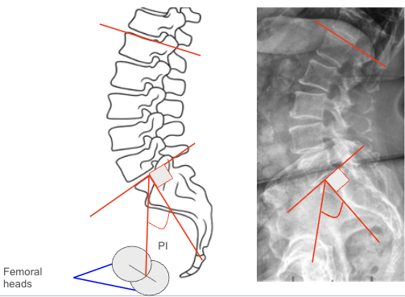

1) Description of Measurement
The Pelvic Incidence–Lumbar Lordosis (PI–LL) Mismatch quantifies the relationship between pelvic morphology and lumbar curvature, serving as a key indicator of sagittal balance and spinal harmony.
This parameter compares a fixed anatomical measure (Pelvic Incidence) with a functional curvature (Lumbar Lordosis). Ideally, lumbar lordosis should closely match pelvic incidence to maintain an energy-efficient upright posture and minimize compensatory mechanisms.
A mismatch (PI–LL > 10°) suggests sagittal malalignment, leading to compensatory pelvic retroversion, knee flexion, and increased muscular fatigue. This metric is critical in preoperative planning and postoperative alignment assessment, especially in adult spinal deformity correction.
2) Instructions to Measure
3) Normal vs. Pathologic Ranges
Key Point: PI–LL mismatch >10° correlates strongly with poor health-related quality of life (HRQoL) and is a critical target for surgical correction.
4) Important References
Schwab F, Lafage V, Boyce R, Skalli W, Farcy JP. Gravity line analysis in adult volunteers: age-related correlation with spinal and pelvic parameters, and foot position. Spine. 2006;31(25):E959–E967.
Schwab FJ, Lafage V, Patel A, Farcy JP. Sagittal plane considerations and the pelvis in the adult patient. Spine. 2009;34(17):1828–1833.
Le Huec JC, Aunoble S, Philippe L, Nicolas P. Pelvic parameters: origin and significance. Eur Spine J. 2011;20(Suppl 5):564–571.
Lafage R, Schwab F, Challier V, et al. Defining spino-pelvic alignment thresholds correlated with quality of life in adult spinal deformity. Spine. 2016;41(1):62–69.
Roussouly P, Gollogly S, Berthonnaud E, Dimnet J. Classification of the normal variation in the sagittal alignment of the human lumbar spine and pelvis. Spine. 2005;30(3):346–353.
5) Other info....
The PI–LL relationship is a cornerstone of sagittal balance analysis and surgical planning.
Pelvic Incidence (PI) is a fixed morphological parameter, while Lumbar Lordosis (LL) is modifiable through posture or surgical correction.
Ideal postoperative target: PI–LL ≤ 10°, with lordosis distributed physiologically (greater in lower lumbar segments).
Increased mismatch leads to compensatory pelvic retroversion (increased Pelvic Tilt) and decreased Sacral Slope.
Low mismatch (0–10°) reflects well-balanced posture with minimal muscular effort.
Clinical significance: Persistent PI–LL >10° post-fusion is associated with poor clinical outcomes, adjacent segment disease, and mechanical complications.
Best visualized with EOS imaging or long-cassette lateral radiographs capturing both femoral heads and entire lumbar spine.
Frequently reported alongside Pelvic Tilt (PT), Sacral Slope (SS), and Sagittal Vertical Axis (SVA) to comprehensively characterize sagittal balance.